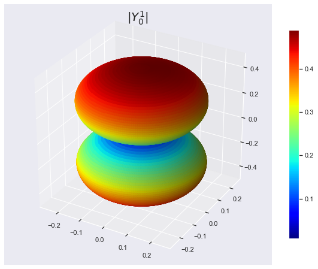
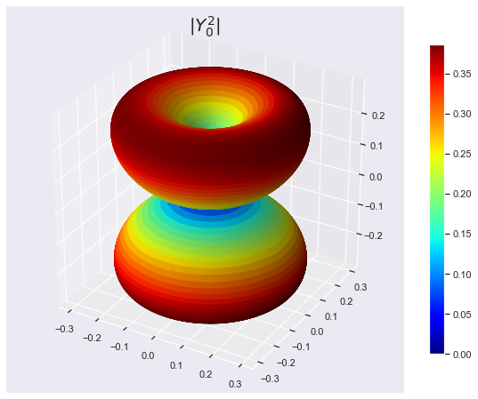
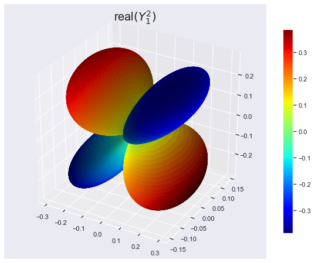
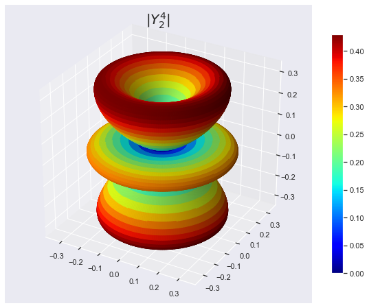

Spherical Harmonics
- Scipy Library:Source
In this notebook we are going to make some fun with Spherical Harmonics.
import numpy as np from scipy.special import jn, yn, jn_zeros, yn_zeros import scipy as sci import scipy.special as sp
from __future__ import division
import matplotlib.pyplot as plt import matplotlib import pylab from mpl_toolkits.mplot3d import Axes3D from matplotlib import cm, colors %matplotlib inline import seaborn as sns sns.set()
Spherical Harmonics
\( Y^m_n(\theta,\phi) = \sqrt{\frac{2n+1}{4\pi} \frac{(n-m)!}{(n+m)!}} e^{i m \theta} P^m_n(\cos(\phi)) \)
Some Examples
\( Y_0^0(\theta, \phi) = \frac{1}{2} \sqrt{\frac{1}{\pi}} \)
\( Y_1^{-1}(\theta, \phi) = \frac{1}{2} \sqrt{\frac{3}{2\pi}} e^{-i\theta} \sin(\phi) \)
\( Y_1^0(\theta, \phi) = \frac{1}{2} \sqrt{\frac{3}{\pi}} \cos(\phi) \)
\( Y_1^1(\theta, \phi) = -\frac{1}{2} \sqrt{\frac{3}{2\pi}} e^{i\theta} \sin(\phi) \)
PHI, THETA = np.mgrid[0:2*np.pi:200j, 0:np.pi:100j] #arrays of angular variables
Spherical Harmonics : Y(1,0)
l = 1 #degree m = 0 #order R = np.abs(sp.sph_harm(m, l, PHI, THETA)) #Array with the absolute values of Ylm #Now we convert to cartesian coordinates # for the 3D representation X = R * np.sin(THETA) * np.cos(PHI) Y = R * np.sin(THETA) * np.sin(PHI) Z = R * np.cos(THETA) # Normalize R for the plot colors to cover the entire range of colormap. N = R/R.max() fig, ax = plt.subplots(subplot_kw=dict(projection='3d'),\ figsize=(10,8)) im = ax.plot_surface(X, Y, Z, rstride=1,\ cstride=1, facecolors=cm.jet(N)) ax.set_title(r'$|Y^1_ 0|$', fontsize=20) m = cm.ScalarMappable(cmap=cm.jet) m.set_array(R) # Assign the unnormalized data array to the mappable #so that the scale corresponds to the values of R fig.colorbar(m, shrink=0.8);

Spherical Harmonics : Y(2,0) and Y(2,1)
l = 2 #degree m = 1 # order PHI, THETA = np.mgrid[0:2*np.pi:200j, 0:np.pi:100j] #arrays of angular variables R = np.abs(sp.sph_harm(m, l, PHI, THETA)) #Array with the absolute values of Ylm #Now we convert to cartesian coordinates # for the 3D representation X = R * np.sin(THETA) * np.cos(PHI) Y = R * np.sin(THETA) * np.sin(PHI) Z = R * np.cos(THETA) N = R/R.max() # Normalize R for the plot colors to cover the entire range of colormap. fig, ax = plt.subplots(subplot_kw=dict(projection='3d'),\ figsize=(10,8)) im = ax.plot_surface(X, Y, Z, rstride=1,\ cstride=1, facecolors=cm.jet(N)) ax.set_title(r'$|Y^2_ 0|$', fontsize=20) m = cm.ScalarMappable(cmap=cm.jet) m.set_array(R) # Assign the unnormalized data array to the mappable #so that the scale corresponds to the values of R fig.colorbar(m, shrink=0.8);

l = 2 # degree m = 1 # order PHI, THETA = np.mgrid[0:2*np.pi:200j, 0:np.pi:100j] R = sp.sph_harm(m, l, PHI, THETA).real X = R * np.sin(THETA) * np.cos(PHI) Y = R * np.sin(THETA) * np.sin(PHI) Z = R * np.cos(THETA) #As R has negative values, we'll use an instance of Normalize #see http://stackoverflow.com/questions/25023075/\ #normalizing-colormap-used-by-facecolors-in-matplotlib norm = colors.Normalize() fig, ax = plt.subplots(subplot_kw=dict(projection='3d'), figsize=(10,8)) m = cm.ScalarMappable(cmap=cm.jet) ax.plot_surface(X, Y, Z, rstride=1, cstride=1, facecolors=cm.jet(norm(R))) ax.set_title('real$(Y^2_ 1)$', fontsize=20) m.set_array(R) fig.colorbar(m, shrink=0.8);

Spherical Harmonics : Y(4,2)
l = 4 #degree m = 2 # order PHI, THETA = np.mgrid[0:2*np.pi:200j, 0:np.pi:100j] #arrays of angular variables R = np.abs(sp.sph_harm(m, l, PHI, THETA)) #Array with the absolute values of Ylm #Now we convert to cartesian coordinates # for the 3D representation X = R * np.sin(THETA) * np.cos(PHI) Y = R * np.sin(THETA) * np.sin(PHI) Z = R * np.cos(THETA) N = R/R.max() # Normalize R for the plot colors to cover # the entire range of colormap. fig, ax = plt.subplots(subplot_kw=dict(projection='3d'),\ figsize=(10,8)) im = ax.plot_surface(X, Y, Z, rstride=1,\ cstride=1,\ facecolors=cm.jet(N)) ax.set_title(r'$|Y^4_ 2|$', fontsize=20) m = cm.ScalarMappable(cmap=cm.jet) m.set_array(R) # Assign the unnormalized data array to the mappable #so that the scale corresponds to the values of R fig.colorbar(m, shrink=0.8);

l = 4 # degree m = 2 # order PHI, THETA = np.mgrid[0:2*np.pi:200j, 0:np.pi:100j] R = sp.sph_harm(m, l, PHI, THETA).real X = R * np.sin(THETA) * np.cos(PHI) Y = R * np.sin(THETA) * np.sin(PHI) Z = R * np.cos(THETA) #As R has negative values, we'll use an instance of Normalize #see http://stackoverflow.com/questions/25023075/\ #normalizing-colormap-used-by-facecolors-in-matplotlib norm = colors.Normalize() fig, ax = plt.subplots(subplot_kw=dict(projection='3d'),\ figsize=(10,8)) m = cm.ScalarMappable(cmap=cm.jet) ax.plot_surface(X, Y, Z, rstride=1,\ cstride=1,\ facecolors=cm.jet(norm(R))) ax.set_title('real$(Y^4_ 2)$', fontsize=20) m.set_array(R) fig.colorbar(m, shrink=0.8);

References
- https://en.wikipedia.org/wiki/Vibrations_of_a_circular_membrane
- https://www.exoruskoh.me/single-post/2017/05/24/Vibrating-Membranes-and-Fancy-Animations
- https://www.acs.psu.edu/drussell/Demos/MembraneCircle/Circle.html
- http://balbuceosastropy.blogspot.com/2015/06/spherical-harmonics-in-python.html